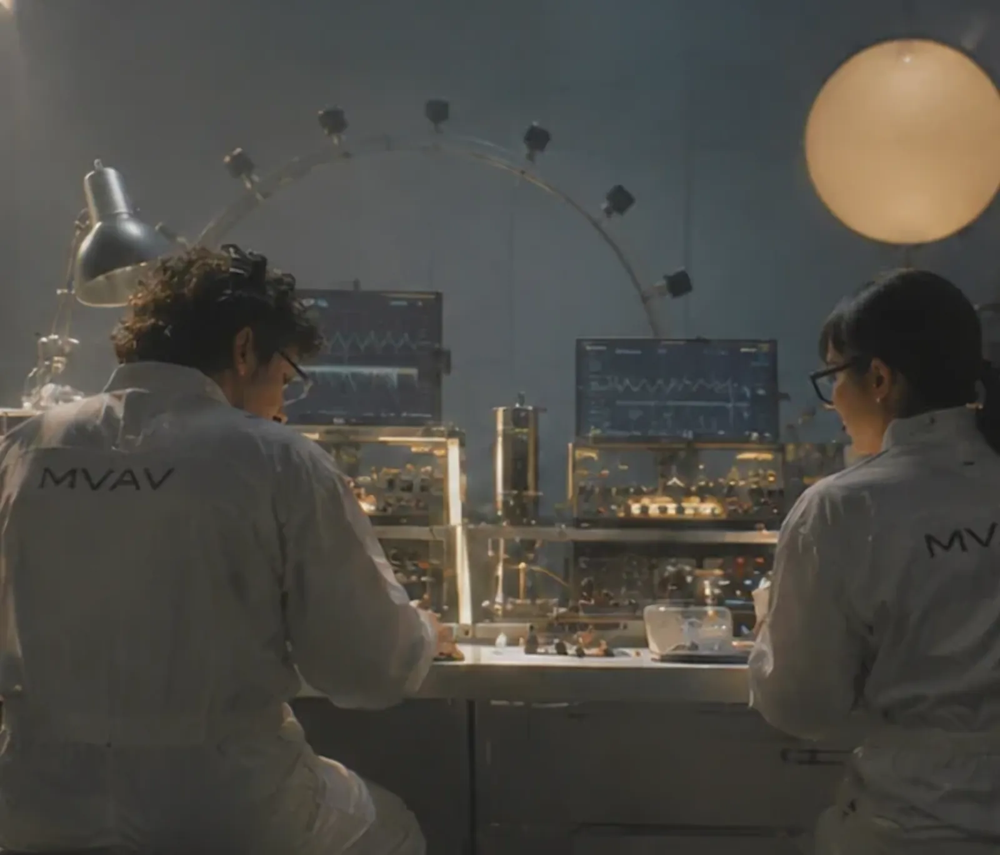
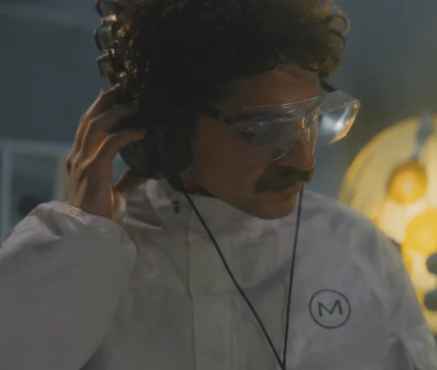
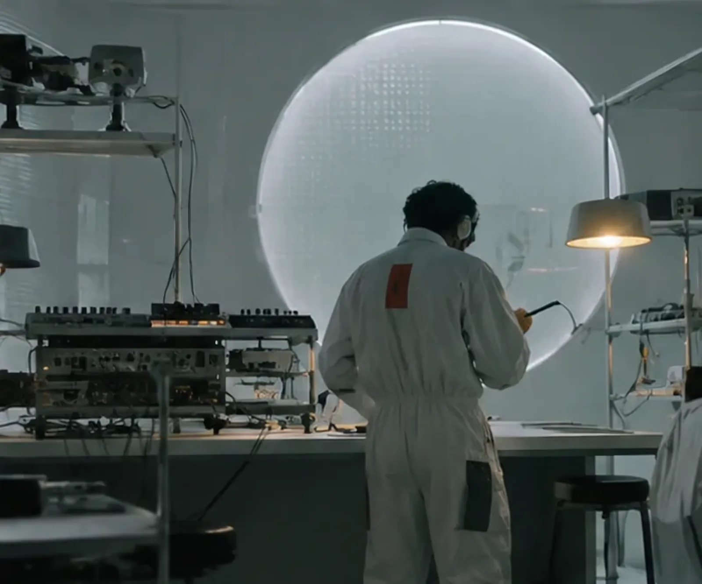
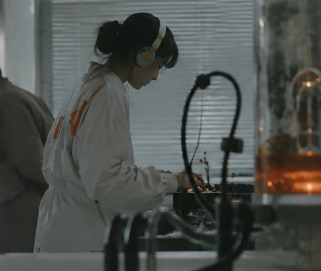
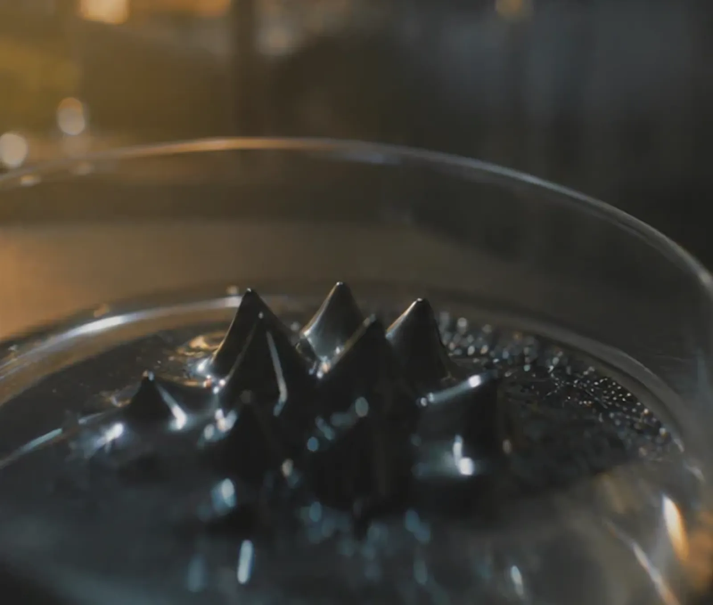
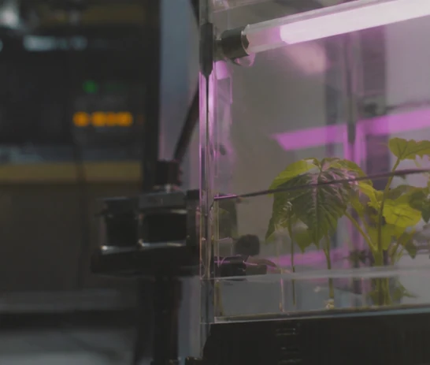
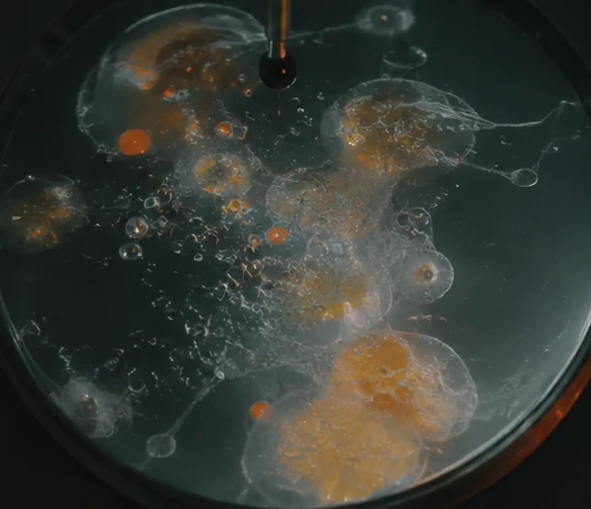
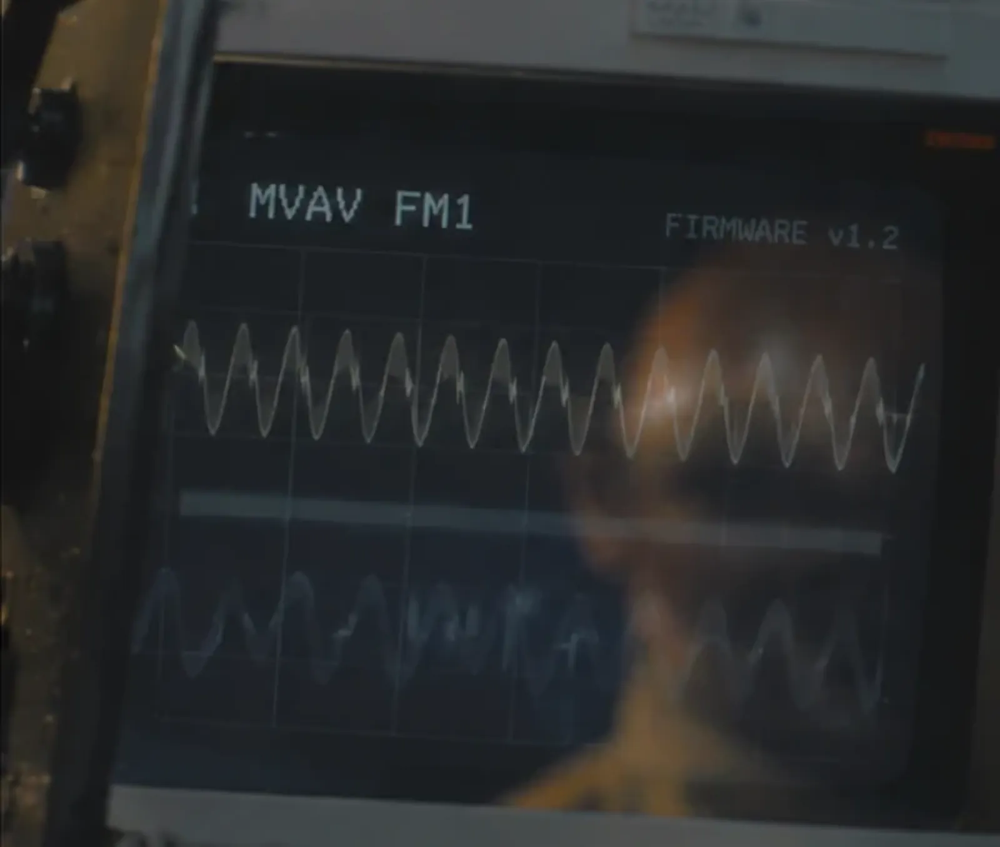

A four-track sound laboratory, inside an M-VAVE FM-1.
Twenty-eight ways of making a wave live in it: drums of its own, those of the LXR-02 and of the Simmons, a four-operator FM, chord progressions, two analog polysynths reimagined, a Moog bass, a vocoder, a soprano and her choir, electrical sparks, a West Coast ping, the finest voices of Plaits. Four filters solved sample by sample, a sequencer that remembers every step, and a dose of chance that turns each note into another sound. Every line of its sound is open source. What plays here is the firmware itself, compiled for your browser: the same engine, the same screen.
Turn your phone sideways: the controls will be bigger.
Tab moves through the knobs, the buttons, the black keys and the white keys. The arrows turn a
knob, Page Up and Page Down turn it faster. Space or Enter holds a button or a key for as long as you hold them;
Shift and Enter keep it held down until the next press (with the mouse: Shift-click or right-click).
Off
core 1 –core 2 –peak –
Forget what was saved and start again from the demo
The load shown is the FM-1’s, estimated: see below.

01
Chapter 1: The machine
Eight knobs, fourteen buttons, a keyboard and a square screen of 240 pixels: the M-VAVE FM-1 is a small object. MIFM1 rewrites everything that runs inside it and turns it into a four-track synthesis machine, which plays on this page too, note for note.
Two open doors made it possible: fm1-base, where Charles Vestal opened the FM-1 to free code, and the modules of Mutable Instruments, whose designer, Émilie Gillet, published every line.
Experiment 5. The test bench.
Getting started

Experiment 1. Listening.
Power on
The orange button wakes the machine and starts the demo: a kick, an FM bass pushed through a Moog filter, a hi-hat, dub chords lost in their own echoes. F minor, 124 BPM.
Pick a track
PRESETS moves from one track to the next. EDIT steps through its sound, its circuit bending and its filter; ENV, its envelopes. Hold EDIT for the presets themselves.
Sculpt
The four knobs set the page on screen, SELECT turns the pages. A circled A at the top of the screen: ALGORITHM changes the model.
Unleash chance
With OCT− held, turn SELECT. Every note becomes a different sound: subtle at first, unhinged at the far end, always in the scale.
The signal path
Four tracks, one chain each: an engine, its bits, a filter, a glitch; then the mixer, two send effects and a master bus. Warps can stand in for a track to cross it with another, and three
LFOs pull forty cables like the strings of a marionette. Everything is computed in 32-bit floating point, on both of the FM-1’s cores.
Every engine speaks at the same loudness. Each was measured the way broadcasters measure (ITU BS.1770, on a held note and on quarter notes) and brought to −21 LUFS for the synths, a little lower for the drums, lower still for the hats: they used to sprawl across fifteen decibels. The bits and Warps keep the level they are given.
The panel
Twenty markers, from the volume to the keyboard. Tap a number: it lights up on the diagram, and on the machine at the
top of the page; “Markers”, under the machine, shows them all.
FM-1 · top view20 markers

02
Chapter 2: The voices
Twenty-eight engines, twenty-eight ways of making a wave: six drums, four after the Simmons SDS 8 and ten instruments written for MIFM1, the two FM voices of the LXR-02, six models of Plaits, their code compiled exactly as it was written. One track, one voice.
2009–2022
Émilie Gillet used to turn research on music into software (a song’s tempo, its genre, at Last.fm and at Google). In 2009 she buys Arduino boards to teach herself electronics; Braids follows in 2013, Plaits in 2018. At the end of 2022 Mutable Instruments closes, and its code stays open: “sharing is a habit”, she says, a scientist’s habit.
Laboratory 3. The machine room.
28 engines
Each track picks one voice: one of MIFM1’s six drums, one of the LXR-02’s two FM voices, one of the four SDS, ZERO, the FM, PADS (one
track at a time), POLY, REV3, TAURUS, VOCODER, CHOIR, STATIC, EASEL, or one of the six models still borrowed from Plaits, the
macro-oscillator Émilie Gillet designed for Mutable Instruments. Engine after engine, MIFM1 has been writing its own in their place, each after an instrument, a
record or a paper it loves. What it borrows, it borrows whole: the same equations, the same tables, the same rounding errors we have grown fond of. Each icon is the one on the screen; “Try” loads the
engine onto the track being played, and the machine sings it at once.
1 / 15
Drums
In 2003, Magnus Lidström’s Microtonic (Sonic Charge) proved that a drum machine needs no sample: an oscillator, a noise, an envelope each, a drive. MIFM1’s drums take that bet. Six models share one engine and the same eight knobs, WAVE, SWEEP, DECAY, FILTER, N.DECAY, MIX, DRIVE, P.AMT: a kick and a cowbell are the same circuit, set differently.
KICK
A sine falling from high up in a few tens of milliseconds, a breath of noise for the attack, a drive: the whole grammar of the electronic kick. Round, snapping, the 909, the sub.
One hit, frozen as the engine renders it: the wave dying out (teal) and its pitch falling (orange).
Drag SWEEP and DECAY along the time · the bar on the left: WAVE, sine to saw
SNARE
A triangle for the skin, barely falling, and a high-passed noise for the wires underneath. MIX weighs the one against the other; FILTER goes from wood to crackle.
CLAP
A band of noise struck three times in a few milliseconds before it falls: the ear hears many hands, never quite together. N.DECAY lengthens the room, FILTER colours it.
HAT
Metal without a sample: a high sawtooth bent by a sine at audio rate, and a high-passed noise above it. N.DECAY opens the hat.
TOM
A slowly sinking sine and a little dull noise, from the electronic tom to the tom-tom, tuned to each step’s note: a melody on skins.
PERC
A wave between triangle and saw, modulated at audio rate, and a band of noise with a straight envelope: bells, cowbell, rimshot, wood, the small percussion of the drum machines.
FM drums
The drum voices of Erica Synths’ LXR-02, heir to the Sonic Potions LXR, open source under the GPL: not an imitation but their own code, compiled for the FM-1 and checked sample by sample against the original.
FM DRUM
A carrier and a modulator in FM, a pitch envelope that snaps: the kick and the toms, from the sub to the electronic tom.
FM SNARE
An oscillator, a noise through a resonant filter, and the snap of a sampled transient: a snare, dry or rough.
SDS
In 1981 a drummer could at last strike a synthesizer: the SDS-V, its pads hexagons. Three years later the SDS 8 gathered its five channels in one analog box, and its manual gives the whole recipe in one line: the sounds are “compiled from a controlled blend of tone and noise”. Four models share one voice and its eight knobs: FILTER, BALANCE, CLICK, DECAY and BEND as on its panel, PITCH on FREQ, then N.DECAY, HIT and DRIVE.
SDS KICK
The bass channel: a triangle, a little lopsided and rounded by a capacitor, struck by a click and bending down as it dies, a breath of filtered noise beneath it. Deep and smooth, the bass its owners still praise, able to sink well below the audible.
SDS SNARE
Tone and noise nearly half and half, the noise bright and never swept, as the snare channel had it: the synthetic snare of the eighties, proud of not being a drum. HIT locked low on a step: a ghost note.
SDS TOM
The sound everyone remembers: the pitch sinking as a head relaxes, more slowly than the sound dies, so that it is still falling as it fades. Each step’s note tunes it, “from a six inch tom-tom to a large timpani”, as the manual promised.
BEND, from the middle: down to the right, up to the left (the manual’s tabla). DECAY sets the whole length, N.DECAY the noise’s against it. HIT is the strength of the stroke: louder, brighter, more bend and more click, to lock or to throw at random step by step. DRIVE pushes the amplifiers until they flatten the wave. A step’s model can be any of the four: a whole SDS on one track.
A kick, a snare (a ghost note struck softly on the eighth step) and the toms’ fill down the end of the bar, on three tracks as on the SDS 8’s channels. Turn the toms’ BEND and DECAY, the snare’s BALANCE, the kick’s CLICK.
SDS PERC
The same circuit taken elsewhere: high, its noise ringing in a resonant filter, its pitch bent upward. The tabla the manual suggests, rimshots, and the “weird filtered noise percussion” one of its owners still finds in it.
An SDS voice: the triangle rounded by its RC, its pitch bent; the noise through the four-pole filter the hit opens; the click taken from that filter; BALANCE between them, then the amplifiers that saturate
1978 → 1984
The hexagons
Dave Simmons, Richard James Burgess
Dave Simmons builds his first drum synthesizers at the end of the seventies, round pads with real heads. Richard James Burgess, the drummer of Landscape, wants an instrument a drummer plays, not a machine that plays in his place: in 1979 he drives a prototype from a Roland MC-8 sequencer, and the idea appears that year in Sound International under the title “Skin and Syn”. The SDS-V comes out in 1981, its pads hexagons, Burgess’ idea after a honeycomb, cut from the plastic of riot shields (wrists complained; rubber came later). The same year Spandau Ballet’s “Chant No. 1”, produced by Burgess, is the first record on which a drummer plays it. In April 1984 Warren Cann, Ultravox’s drummer, reviews the SDS 8 for Electronics & Music Maker: five analog channels in one box, £675, “the classic Simmons sound”.
SDS keeps its manners: a triangle oscillator, a noise through a four-pole filter swept by the hit, a click, amplifiers that saturate, the strength of the stroke in every parameter. Its kits are the SDS 8’s channels; PERC is the same circuit led toward the tabla.
→ SDS
The pitch of an analog tom sampled from an SDS 1000 (black) and of SDS TOM tuned to the same strike (orange), from the hit to 300 ms: the same slow fall, measured, not imitated by ear
1986 → 2026
Measured
SDS 1000, MIFM1
No SDS 8 has had its voice published as an algorithm, so it was taken from the sound: forty hits of an SDS 1000, a later Simmons whose three toms are still analog, the circuit’s heirs, shared on GitHub by Wolf Meijer. Their pitch falls along an exponential two to three times slower than the sound itself, so that it is still sinking as the tom fades; their triangle carries a second harmonic around −20 dB, the warmth of an oscillator not quite symmetrical; their click is a few milliseconds of bright noise. SDS reproduces these measurements; the rest (a drift of a few cents, no two hits alike) is what an analog circuit does without being asked.
The voices written for this machine: not ported modules but its own algorithms, each born from an instrument, a record or a paper.
ZERO
Pure sines in true through-zero FM. One sine carries the note; a modulator (sine, triangle or saw: SHAPE) pushes its frequency linearly, as the FM input of a “through zero” analog oscillator would. Past INDEX 1, the frequency crosses zero and the phase runs backwards, and yet the note does not move. At 0, a pure sine; higher, a round bass that hollows itself out, then the grain of a sawtooth FM.
Each trig is a round pulse, a cosine rise and a fall with no corners. BEAT brings it to life; PULSE sends it into the volume (a second pure sine a few hertz away: two oscillators beating) or into the timbre (the modulator nudged off its ratio: the spectrum turns slowly). VARY behaves like MIFM1’s random controls: to the right every trig is another sound, to the left the same sixteen come back in a loop. ZERO is made to be broken afterwards, by the track’s circuit bending.
INDEX 2.2, a sine modulator at x1: the frequency drops below zero (in orange), the note stays
1973 → 2005
Going through zero
John Chowning, then Cyndustries
In Chowning’s paper, when the modulation outgrows the carrier, some sidebands fall below zero hertz and come back folded, their sign inverted: in a computer, a phase turning backwards costs nothing. Analog oscillators, though, bend their frequency exponentially, and their note drifts as soon as the FM deepens. In December 2005, Cyndustries announces the Zeroscillator, designed by Mark Barton: an analog oscillator whose frequency can pass through zero, digital FM at last on an all-analog path.
ZERO walks back down the same path: a linear FM computed twice per sample, pure sines, round pulses, somewhere near the basslines of Haus Arafna.
→ ZERO
FM
Four operators, as in the YM2612 that sang inside the Mega Drive. ALGO chooses one of its eight algorithms (the diagram appears on screen); RATIO one of thirty tunings of the operators, harmonic or not (the tine of an electric piano, a bell, mallet bars, metal), the last eight real chords as soon as three operators sound together. INDEX sets how hard they modulate one another.
FEEDBACK turns the first operator into a saw or a square, then into noise; MUTATE grafts two of the Hydrasynth’s Mutants onto the operators you hear, pulse width on one side, sync on the other. Each operator follows its own envelope, and SHAPE chooses among fifteen pre-drawn curves: to the right the FM opens on the trig (plucks, cascades, bounces), to the left it grows (swells, late blooms, a reversed FM, a breath). MOTION lets every operator breathe at its own speed, so the timbre never passes through the same state twice; and, as with the partials of a real sound, a high operator fades sooner than a low one.
The chip's eight algorithms, on ALGO: in orange, the operators you hear; operator 1 modulates itself (FEEDBACK)
1967 → 2020
From Chowning to the Mega Drive
Stanford, Yamaha, Sega, then Twisted Electrons and ASM
In 1967 at Stanford, John Chowning speeds up a vibrato until it is no longer heard as a vibrato: two sine waves, and whole spectra pour out. Stanford licenses the discovery to Yamaha in 1974, and it becomes, for a time, the university’s most lucrative patent; in 1983 it is the DX7, then four-operator chips for computers and consoles. The Mega Drive’s, in 1988, is the YM2612: six voices of four operators, eight algorithms, feedback on the first, and a 9-bit converter whose grit at low volume became part of the sound. In 2020 Twisted Electrons puts two of them in the MEGAfm; ASM’s Hydrasynth, announced in 2019, warps its oscillators with “Mutants”.
MIFM1 keeps the chip’s architecture and computes its operators twice per sample in floating point, clean, without aliasing or converter dust: the track’s circuit bending is there to put the dust back.
Yamaha’s OPN2, the Mega Drive’s voice: six FM voices of four operators, the sixth able to play 8-bit samples (the shouts and snares of the games), in stereo, at about 53 kHz. A Z80 drives it while the 68000 runs the game. Yuzo Koshiro draws the house basslines of Streets of Rage out of it, Masato Nakamura the melodies of Sonic the Hedgehog: a generation learned what FM sounds like from a console.
MIFM1’s FM keeps the chip’s architecture, its eight algorithms and the feedback of its first operator, and leaves the grit to the circuit bending.
The fifteen SHAPE curves, left to right on the knob: the depth of the first three modulators (the first in orange) over the course of the note, on INDEX (the line)
1983
One envelope per operator
Yamaha, the DX7
On the DX7, each of the six operators has its own envelope, four rates and four levels: a modulator that falls quickly gives an electric piano its bright attack, one that rises slowly makes a brass breathe. That is where FM lives, and why it was so hard to program: 48 values per sound, set one by one on a two-line display. Many players never left its factory sounds.
SHAPE draws fifteen of those envelopes in advance, each modulator its own, stretched or delayed: one knob, and the timbre travels through its stages.
→ FM
PADS
Chords, and the progressions music has never stopped turning. PROG picks one of twenty-six (Pärt, Pachelbel, La Folia, the lament bass, Satie, Bach, and darker paths: the flat second, the tritone, chromatic mediants, a voice sinking inside a minor chord): each trig on the track moves to the next chord, built in the project’s scale. In Manual, the key you play chooses the chord, one key, one degree. COLOR tints it (power, triad, sus, sevenths, ninths, eleventh, sixth); VOICING opens it up, each voice moving to the nearest note, as a choir would.
Each note is a sawtooth to begin with; WAVE, on its fourth page, melts it into a sine, a triangle or a square, two at a time in between. ENSEMBLE makes it three (a string machine); to the left VINTAGE, every voice slightly out of tune and drifting its own way, like an old polysynth’s. TONE darkens it; GLIDE slides each voice to its note in the next chord; RELEASE sets how long it fades when you let go. TEXTURE wears it, after Boards of Canada’s pads: Tape (wow, flutter, a soft saturation), Drift, Dust (fewer samples, fewer bits, a crackle now and then), Down (an octave underneath). Only one track plays it, and in GLO the Prog scale makes every other track follow its chord, as it changes.
LAYER, on PADS’ fifth page, sets a second instrument over the chord: Bell (an FM bell on the top note), Chime (wind chimes, struck now and then while the chord sounds), Kalimba (a tine on the top note at each trig), Pluck (the top notes strummed, up then down), Vox (the pad sung through an alto’s formants, from A to O to U), Air (a breath tuned to the top notes), Halo (an octave and a fifth, and two octaves, blooming slowly) and Swell (a reversed swell that learns your trigs and rises into the next one). LEVEL sets its volume, from silence to +6 dB; CHARACTER what it does besides (the wind, the ring, the bloom…); TRANSP moves it alone by up to two octaves. The pad under it stays exactly the same.
Tintin, the first progression: A minor held (the T-voice, the bells); above, in orange, a voice that steps down by degrees and back up (the M-voice; the chord notes, already there, skipped)
1976
Tintinnabuli
Arvo Pärt
After years of near silence spent studying Gregorian chant and medieval polyphony, the Estonian composer Arvo Pärt writes Für Alina in 1976, a piano piece in two voices: one moves by step, the other rings only the notes of the triad, like bells. He calls it tintinnabuli, from the Latin for little bells. Spiegel im Spiegel, in 1978, is its best-known form: a violin rising and falling slowly over a held chord, as if time had stopped to listen.
PADS keeps the principle, and adds what music has kept turning for centuries: La Folia, Pachelbel’s Canon, Purcell’s lament bass, the Baroque circle of fifths, the first prelude of the Well-Tempered Clavier, Satie’s first Gymnopédie. With the Prog scale, the whole machine moves with the chord.
→ PADS
TEXTURE’s four, each from a touch to all of it; its fifth until 0.16.57, Bell, now rings among LAYER’s eight
1998 → 2005
Boards of Canada
Mike Sandison, Marcus Eoin
Music Has the Right to Children (Warp and Skam, April 1998) is made with intentionally detuned vintage synthesizers, drum machines and reel-to-reel tape recorders. For “Dayvan Cowboy” (The Campfire Headphase, 2005), Mike Sandison tells Remix of six roughly identical takes laid onto mono tape “so they clash and chorus microtonally”, overloaded, then sampled off the tape and shifted by an octave. Elsewhere, parts thrown onto overloaded tape and recorded back through low-quality mics, sounds fed through stacks of destructive hardware and resampled; and samples from the nature documentaries of the National Film Board of Canada.
PADS’ TEXTURE borrows four of those habits for a held chord: the tape and its wow, the drift, the wear of destructive machines, the octave. It does not imitate their records; it wears the chord the way they wore theirs.
→ PADS
POLY
A small analog polysynth after Roland’s SH-101 and its four-voice heir, the S-1. Each voice has one oscillator (WAVE travels from saw to square to an ever-thinner pulse, then to PWM, each voice with its own LFO), a sub-octave beneath it (SUB), the SH-101’s four-pole filter up to self-oscillation (CUTOFF, RESO), and a single envelope for the filter and the volume (ENV: its depth to the right, a slow rise to the left).
MODE chooses between Mono, one voice that always plays the newest key and falls back to the previous one when you let go, and Poly, one voice per trig, the earlier ones still ringing beneath, and chords by hand on the keyboard. VOICE goes from VINTAGE, each voice a little detuned and drifting, its filter and envelope slightly apart, to UNISON, all four on the same note.
A POLY voice, like the SH-101's: three waves mixed, the four-pole filter, one envelope on the filter and the volume; four voices per track
1982 → 2023
The SH-101
Roland, then the AIRA S-1
In November 1982, Roland releases a small $495 monosynth in grey (then red and blue), that you can hang from your shoulder and play with a modulation grip: one oscillator mixing saw, pulse and sub-octave, the four-pole filter of the Juno-60 and the Jupiter-8 (the IR3109), a single envelope. Cheap on the second-hand market a decade later, it becomes one of the voices of 1990s house, techno and electronica: Aphex Twin, Boards of Canada, The Prodigy, The Chemical Brothers. In 2023 the AIRA S-1 rebuilds it, digital and pocket-sized, with four voices and a chord memory.
POLY keeps its architecture, four voices per track, each with its own filter and envelope, and adds what the S-1 brought: chords, which follow the PADS harmony when CHORD is turned left. VINTAGE pulls each voice slightly apart, the way time pulls apart the voices of an old polysynth.
The great polyphonic classic, after Sequential Circuits’ Prophet-5, and named after its third revision, the one built on Curtis chips: four voices per track. Each voice has two oscillators (OSC recalls one of thirteen panel settings: two saws, a fifth, an octave, hollow, thin, synced, a bell, a breath, noise…), the four-pole filter, and two envelopes, one for the filter and one for the volume (ENV: from brass to pads).
POLY-MOD, the heart of the Prophet: to the left the filter envelope sweeps A’s pitch (with sync, the famous screaming sweep), to the right oscillator B modulates A’s frequency (bells, metal). VINTAGE, like the knob on the 2020 Prophet-5, goes from exact voices to the instability of the early revisions. CHORD calls up a chord memory or the harmony of PADS; on Off, you play the chords by hand.
A REV3 voice: two oscillators and noise, the four-pole filter, two envelopes; dotted, POLY-MOD: the filter envelope or oscillator B on A's frequency
1978 → 2020
The Prophet-5
Dave Smith, John Bowen, Sequential Circuits
Shown at NAMM in January 1978, Dave Smith and John Bowen’s Prophet-5 is the first fully programmable polyphonic synthesizer: a microprocessor remembers every knob and gives it back at the press of a button, which, until then, no polysynth could. Five voices of two oscillators, a four-pole filter, two envelopes, and Poly-Mod. Its third revision trades the SSM chips for Curtis ones; it is on records by Kraftwerk, Japan, Phil Collins, on Thriller, in John Carpenter’s films, with Vangelis, as far as Radiohead’s Kid A. In 2020 the Rev 4 adds a Vintage knob that gives the voices back the instability of the first ones.
REV3 keeps the architecture of a voice, its two oscillators anti-aliased right down to their sync, Poly-Mod, and that Vintage knob; its chords are POLY’s.
A monophonic bass after Moog’s Taurus pedals and the Minimoog: one voice per track, very fat, its lows rooted. Two oscillators, B beating slowly against A, and for the Minimoog’s waves a third one an octave below; the transistor ladder Moog patented, a tanh at each of its four stages, its emphasis up to oscillation, its bass given back as it rings; a contour on the cutoff that rises and falls whatever the note does, as the Taurus’ did; glide.
VOICE begins with the Taurus’ three presets as their names say them (Taurus, the roar that settles into a purr; Bass, plucked; Tuba, the lows filled in, B an octave under), then the Minimoog’s six waves with its third oscillator beneath. BEAT detunes B against A, MIX brings B in and then pushes both into the ladder until it saturates. CUTOFF and EMPH are the filter; CONTOUR its envelope, deep to the right, a slow swell to the left; DECAY the Taurus’ DECAY switch; GLIDE the slide between notes.
A TAURUS voice: A and B (the Minimoog's sub under them) into the ladder, pushed; dotted, the emphasis' loop; the contour on its cutoff, the loudness after it
1970 → 1981
The Taurus
Moog Music: David Luce
Moog’s bass pedals (1975–1981), designed by David Luce: thirteen pedals for the feet, two sawtooth oscillators, the transistor ladder the Minimoog had made famous, three fixed presets and one of your own. Under Genesis, Rush, Yes, Pink Floyd, The Police and U2, it held the floor while the hands played something else, an instrument for the bass player who also sings or plays keys. Its owner’s manual says it all, down to a contour that never sustains.
TAURUS keeps its manners: two saws beating, a contour that falls back whatever the pedal does, the DECAY switch, the three presets. Then the Minimoog’s (1970): six waves, a third oscillator an octave under, a mixer pushed into the filter until it growls. Their ladder is MIFM1’s own LADDER, after the model Stefano D’Angelo and Vesa Välimäki published, its bass given back.
A channel vocoder and the synthesizer it sings with, after Roland’s VP-330 Vocoder Plus. The voice is another track, chosen with MOD and taken before the mixer: turned all the way down, it is heard only through the vocoder (SPEECH is at home here). The carrier is the VOCODER itself, four voices played by the steps, the keys or one of PADS’ progressions, three saws each, from fat saws to strings to a choir. Twelve bands half an octave apart listen to the voice and hand their levels to the carrier; an automatic gain keeps a whisper as present as a shout. MOD off, it is a four-voice string machine.
PLAY, from the middle: Mono to the left, Poly at noon, then Manual (the key picks the scale’s chord) and the 26 progressions of PADS, each trig the next chord, every voice moving as little as it can. MOD names the track that speaks. TONE goes from saws to strings to a darker choir with the formants of an “ah”. ENSEMBLE thickens it, ATTACK and RELEASE shape it. FOLLOW is how quickly the bands let go, and at its end Hold freezes a vowel in mid-air. SHIFT moves the voice’s bands down or up, a deeper or a smaller voice; AIR lets its s and t through.
SPEECH speaks on T3, silently; the VOCODER on T4 takes its words and sings them on the Lament progression. TONE, ENSEMBLE, SHIFT and AIR change who is singing.
A VOCODER track: the voice (another track) into twelve bands, each followed; their levels set the carrier’s twelve bands; the ensemble thickens the sum. SHIFT moves the levels across the bands, AIR adds the voice’s highs, Hold freezes them
1937 → 1979
The Vocoder Plus
Roland; Bell Labs: Homer Dudley
Roland’s VP-330 (1979–1980): a ten-band vocoder, strings and a “human voice” choir, all through an ensemble of bucket-brigade delay lines. The idea is older and graver. In the late 1930s Homer Dudley, at Bell Labs, splits speech into bands and rebuilds it from their levels alone, to send it down a narrow telephone line; the war turns it into an encrypted telephone between Washington and London (SIGSALY); the 1970s turn it into an instrument. Vangelis, Yellow Magic Orchestra, Laurie Anderson and Underworld put the VP-330’s choirs and robot voices on their records.
VOCODER keeps its pairing: a vocoder and the strings and choir it sings with, the ensemble over both. Its twelve bands are pairs of state-variable filters whose poles are placed exactly for their band and rate; the voice is listened to at an eighth or half the sample rate, which is what makes it affordable on the FM-1. Its own inventions: the automatic gain, SHIFT, AIR, and Hold.
→ VOCODER
A Roland VP-330 Vocoder Plus, a later model · Wikimedia CommonsHomer Dudley’s vocoder, its circuit (Bell System Technical Journal, 1940) · Wikimedia Commons
CHOIR
A singing voice made of nothing but physics, after IRCAM’s CHANT: a glottis feeding the five formants of a vocal tract, side by side, each tuned to the frequency, width and level that Csound’s table gives that voice and that vowel. The source is Rosenberg’s glottal pulse, its closure smoothed so that the high notes stay clean; TIMBRE decides how long the glottis stays open and how sharply it closes, from a soft, round voice to a pressed, bright one. As a soprano does in her high register, the first formant climbs with the note when the note passes it. A vibrato that arrives a moment after the attack, a slow drift of a few cents, a slight scoop into every note. Legato: a note arriving while another still sings, a finger slid across the pads, glides there without a new breath. VOICES turns the soprano into a choir: alto, tenor and bass, each a singer of their own, harmonized beneath the melody in the scale, or singing a step’s chord.
VOWEL moves through A, E, I, O, U, melting one into the next. VOICES: Solo, Duo, Trio, Choir. TIMBRE: soft to the left, pressed to the right. BREATH adds air through the same formants, louder as the glottis opens, and is silent by default. GLIDE, VIBRATO, ATTACK and RELEASE shape the phrase.
The soprano alone on a slow line in F minor, each note held into the next. Turn VOICES and a choir gathers under her; VOWEL, TIMBRE and BREATH change the singer.
A CHOIR voice: the glottis (TIMBRE its shape) and its breath into five formants side by side, each at the table’s frequency, width and level for its voice and its vowel; the first follows the note up. Four of them, soprano, alto, tenor and bass, make the choir
One of the first programs written at IRCAM, in Paris, by Xavier Rodet and his team: a singing voice built not from recordings but from rules, a source and its formants, each formant a small wave of its own, the FOF (fonction d’onde formantique), excitation and resonance at once. Computer Music Journal devoted three articles to it in 1984, and composers seized it: Kaija Saariaho wrote Vers le blanc (1982) with it. Csound’s fof descends from Michael Clarke’s C coding of CHANT, and its manual still keeps a table of formants, five for each vowel of a soprano, an alto, a tenor and a bass.
CHOIR keeps its idea, a source and five formants in parallel, but not its FOFs: band passes, cheaper on the FM-1, their peaks within a decibel or two of the table. What it adds: a band-limited glottis, TIMBRE, the breath, the legato glide, a level held from one vowel to another, and a choir that harmonizes itself in the scale.
A machine of electrical events, for minimal, percussive, unstable sequences, after the sines, ring modulators and static of Pan Sonic and Ryoji Ikeda, and on the plan of ARC/01, Yoann’s specification: the contrast between a pure sound and a destroyed one matters more than the amount of destruction. Each track holds one of three generators (MODE, lockable step by step). BODY, a sub sine falling onto the note from up to four octaves above, pure or driven. ARC, a carrier phase-modulated by a modulator set in hertz, never as a ratio, with feedback, ring modulation, drift and a drive. SPARK, events rather than a steady noise: bursts, impulses, trains of impulses through a high or a band pass, and more of them at random while the gate is open.
Its eight knobs change meaning with MODE. On BODY they are the fall (PITCH, SWEEP), the matter (MIX, DRIVE, CLICK) and the time (ATTACK, DECAY, then Hold). On ARC, the modulator (MOD, INDEX, FEEDBACK), the ring, the drift and the drive. On SPARK, the source (white noise, sample and hold, impulse, train), its rate, the filter and its Q, the DENSITY of events while a gate is open, their CLUSTER and their DECAY. Turning MODE resets the other seven to that generator’s starting point.
Three tracks of STATIC, the three lanes of ARC/01: BODY’s rare sub hits, ARC’s copper ring, SPARK’s sparks. Turn ARC’s INDEX and FEEDBACK, SPARK’s DENSITY, BODY’s PITCH.
A STATIC voice, by MODE: BODY, a sine falling to the note (dotted), pure or driven; ARC, the carrier phase-modulated by its modulator, its feedback dotted, then its ring modulator and its drive; SPARK, a source through a high or a band pass, in bursts
1996 → 2026
Sine, ring, static
Ryoji Ikeda; Pan Sonic; Morphor; ARC/01
In 1996 Ryoji Ikeda makes +/- out of nothing but sine waves and white noise, the most elementary sounds he can imagine: the sine defined to the hair, the noise as pure chaos. Pan Sonic, from Turku (Mika Vainio and Ilpo Väisänen, 1992), play the same extremes on machines built for them, harshly minimal and extremely loud. In 2025, Morphor’s ECHON 6 slows white noise down through a variable-rate sample and hold until it breaks into crackling textures.
In 2026 Yoann writes ARC/01, the specification of an instrument of electrical phenomena: three generators, a body, an arc and sparks; frequencies in hertz; silence weighed as carefully as timbre. STATIC follows it to the letter, a generator per track, every step free to call on another: a single hit every two bars and a few irregular clicks are a sequence too.
A West Coast voice after Buchla’s Music Easel (1973): a sine that TIMBRE folds into ever richer partials, a second oscillator bending its pitch or its level at a ratio of the note, and the lowpass gate, a filter and an amplifier at once, whose vactrol, lit by a short pulse, opens at once and closes slowly, darker as it fades: the ping. Very short decays and metallic ratios: struck metal, wood, glass, rain on a tin roof.
TIMBRE folds the sine (Buchla’s 259, its five cells); SYMM tilts it toward the even partials. RATIO sets the modulation oscillator to one of 24 ratios of the note, whole (harmonic) or between them (√2, φ, the bell’s 2.76, π: metallic). MOD, from the middle: AM to the left, FM to the right, through zero. DECAY: its first third is a Ping, from 35 to 700 ms; further on, the envelope, from 2 ms to 8 s. GATE: VCA, Combo (both at once, the Easel’s sound) or LP. T.ENV and M.ENV let the gate’s light move TIMBRE and MOD: brighter and more modulated at the strike, or the other way round. The cell behaves as a real one does: it falls quickly, then lingers, dark; it remembers, a run of fast pings ringing longer than a lone one; and no two strikes are quite alike.
An EASEL voice: the modulation oscillator (RATIO times the note) bends the complex oscillator’s pitch (FM) or its level (AM); TIMBRE folds its sine; the lowpass gate lets it through as far as its vactrol is lit by the envelope, a mere pulse for a ping (below: the pulse, and the light falling slowly after it); the light also moves TIMBRE and MOD (dotted)
1963 → 2026
West Coast
Don Buchla; Morton Subotnick; Suzanne Ciani; Kaitlyn Aurelia Smith
In 1963 Ramon Sender and Morton Subotnick, of the San Francisco Tape Music Center, ask Don Buchla for a voltage-controlled instrument: it becomes the 100 series. Where the East Coast filters a bright wave, Buchla builds the timbre up, by modulating one oscillator with another and by folding a simple wave onto itself, and lets the sound through a lowpass gate, a filter and an amplifier at once, its light-dependent resistor lit by a lamp: struck, it closes slowly and darkens as it fades, like a struck object. In 1973 the Music Easel puts a whole voice of the 200 series in a suitcase: the 218 touch keyboard and the 208 Stored Program Sound Source, its two oscillators, its timbre, its gates, its envelope, a pulser and a five-step sequencer.
In 2016, on Sunergy, Suzanne Ciani plays a Buchla 200e and her neighbour in Bolinas, Kaitlyn Aurelia Smith, a Music Easel. EASEL follows two papers: Julian Parker and Stefano D’Angelo’s model of the lowpass gate (DAFx 2013), its circuit, its three modes, its photoresistor’s law; and Fabian Esqueda, Henri Pöntynen, Vesa Välimäki and Julian Parker’s model of the 259’s wavefolder (DAFx 2017), its five cells, their thresholds and weights the circuit’s.
→ EASEL
A Music Easel · Wikimedia CommonsA Buchla 200: the 259 (above) and the 292c’s lowpass gates (below) · photo possan, CC BY 2.0 · Wikimedia Commons
Plaits
What remains of Plaits, the module Émilie Gillet released in 2018 as the “spiritual successor” of Braids, redesigned from scratch: its synthetic voices.
SPEECH
Three speech syntheses stacked: formant filters, SAM (the Software Automatic Mouth of the Commodore 64) and the LPC of Texas Instruments’ Speak & Spell. In Gillet’s manual, its timbre goes “from Daleks to chipmunks”.
A toy that teaches children to spell, and inside it a first: the TMC0280, speech synthesis on a single chip. The voice is a tenth-order linear predictive model of the vocal tract, replayed from a handful of coefficients per frame. In 1982 an alien builds one into a homemade transmitter in E.T.; opened up and rewired, it becomes the first instrument of many circuit benders. Plaits’ SPEECH keeps that LPC, next to its formant synthesis and SAM.
→ SPEECH
Noise & physical
Noise and physics: models of matter, strings and resonators.
SWARM
“A swarm of 8 enveloped sawtooth waves”, in Gillet’s words, each drifting its own way: from supersaw to cloud.
NOISE
White noise with a variable clock through a resonant filter: from breath to tuned whistle, by way of jagged digital noise.
PARTICLES
Dust: random impulses exciting networks of resonant filters. Rain on a roof, crackles, tuned drops.
STRING
An extended Karplus-Strong: a delay line and a filter in a loop make a plucked string, and dispersion makes it inharmonic, from harp to fence wire.
MODAL
A bank of modal resonators, struck by a mallet or blown by noise: bells, wood, glass, tubes. The manual calls it “for your own pleasure, a mini-Rings”, Rings being, with Tides, Gillet’s favourite of her modules.

Laboratory 6. Tuning.
1983
The Karplus-Strong string
Alexander Strong, Kevin Karplus
Alexander Strong finds it, Kevin Karplus explains it: a burst of noise in a delay line, averaged on every pass, and a plucked string appears out of nowhere, dying away on its own. Published in 1983 in the Computer Music Journal, the idea fits in a few lines of code, which is perhaps why it never left. Plaits’ STRING descends from it; MODAL rings resonators instead.
→ STRING · MODAL
03
Chapter 3: The filters
Four famous circuits and the vactrol of a low pass gate, turned into differential equations and solved again at every sample, the bends of their transistors included.
1939–2013
From a machine that spoke at the 1939 New York World’s Fair to the ladder Robert Moog patented: each filter keeps its story beside it.
Laboratory 1. Light in the tube.
Four filters, four circuits
One filter per track, after the bits. Four famous topologies, rebuilt from their circuits rather than from their curves:
differential equations solved sample by sample, with their nonlinearities exactly where the transistors put them.
The curves below are their responses, cutoff at 1 kHz.
1 / 6
LADDER
The Moog ladder
Orange: the 24 dB low-pass, resonance pushed. Black: no resonance. Dotted: the high-pass.
Robert Moog’s transistor ladder: four RC stages in cascade, each built around a differential pair, the output fed back to the input for resonance. Here it is the “improved” model Stefano D’Angelo and Vesa Välimäki published in 2013: each stage saturates as a tanh, as its transistor does, and self-oscillation is born from the circuit itself rather than from an added oscillator. Its stages are tuned on their own loop, so the resonance lands on CUTOFF to within a cent up to 4 kHz, and it begins to sing past 95 %. A 24 dB low-pass; high-pass and band-pass are taken from the stages, as Oberheim did on the Xpander.
A low sawtooth (A1, 55 Hz) through the LADDER alone. Each teal line is one of its harmonics, the black curve what the filter lets through: measured on the filter itself.
Drag the orange point: cutoff left and right, resonance up · the bar on the left: DRIVE
MS-20
The Korg 35
Orange: the 12 dB low-pass and its peak. Dotted: the 6 dB high-pass.
The Korg 35 of the early MS-20s and the MS-10: two Sallen-Key poles and a resonance loop with the saturation inside the feedback path. That is what makes it scream when pushed, instead of clipping. It is modeled without a delay in the loop (zero-delay feedback, after Vadim Zavalishin), following Will Pirkle’s note AN-5: a 12 dB low-pass, a 6 dB high-pass, and a band-pass in series like the MS-20’s two filters.
The same sawtooth through the MS-20: 12 dB an octave where the LADDER has 24; push the resonance and its peak rises over the rest: it screams.
Drag the orange point: cutoff left and right, resonance up · the bar on the left: DRIVE
SEM
The Oberheim SEM
All three outputs together: orange the low-pass, black the band-pass, dotted the high-pass.
The state-variable filter of Oberheim’s Synthesizer Expander Module (1974): two integrators looped around a summing stage, and three outputs at once, low-pass, band-pass, high-pass. A 12 dB slope and a round resonance that, as on the original, never self-oscillates. Written in Zavalishin’s TPT topology, so that it stays true all the way up into the highs.
The same sawtooth through the SEM: low pass, band pass or high pass, the same point.
Drag the orange point: cutoff left and right, resonance up
VOX
The formants
Orange: the vowel A (730, 1090, 2440 Hz). Black: the vowel I (270, 2290, 3010 Hz).
Not a synth filter but a mouth: three resonators in parallel, tuned to the first three formants of the vowels as Gordon Peterson and Harold Barney averaged them in 1952, across 76 voices. CUTOFF travels from A to E, I, O, U, the resonance sharpens them, TYPE picks a low, middle or high voice. With noise, it whispers.
The same sawtooth through VOX: three formants, the vowels’ as Peterson and Barney measured them. CUTOFF slides from one vowel to the next: a, e, i, o, u.
Drag the point along the vowels · the bar on the right: RESO, narrower formants
A vactrol envelope for each one. A vactrol is an LED glued to a photoresistor: the
light comes on at once, the resistance falls back slowly and never in a straight line, a little lag that sounds alive. It is the soul of Buchla’s low pass
gates, and of the LPG of Plaits, whose coefficients MIFM1 reuses. Around it: PING, which
strikes the filter on every trig (with resonance, it rings on its own, like a tom), FM from its own
output, sample by sample, and a coloured noise, darker, white or brighter, fed into the filter.
What MIFM1 solves, 44,100 times a second, per track
2012 → 2013
The equations
Vadim Zavalishin, Stefano D'Angelo, Vesa Välimäki
Circuits become equations, solved at every sample. In 2012, at Native
Instruments, Vadim Zavalishin publishes The Art of VA Filter Design, which shows how to close a digital filter’s loop without the one-sample delay that had always bent its tuning.
In 2013, Stefano D’Angelo and Vesa Välimäki rebuild the Moog ladder from its transistors. MIFM1
runs both, on the FM-1’s two cores.
→ LADDER · MS-20 · SEM

04
Chapter 4: Matter
Bits before the filter, a glitch after it, then the effects: the means to break a sound, stretch it, graft it onto another.
1967
A small amplifier left in a desk drawer shorts against the metal and starts to sing. Reed Ghazala has just found circuit bending; later, he will give it its name.
Experiment 4. Ferrofluid in a field.
Circuit bending
Rather than one more drive (the filters’ own does that better), tools to break a sound musically. The first
page, the bits, comes before the filter, in the manner of OTO’s Biscuit: CLOCK holds each sample for a
multiple of the note, so the aliasing stays in tune; BITS rounds from twelve bits down to one; MASK switches on, inverts or kills
each of the word’s eight bits; SHAPE rectifies, divides, folds, swaps the halves of the word. The
second, the glitch, comes after the filter, in the manner of Qu-Bit’s Data Bender: on every sixteenth, a
chance that the track stutters on a slice of itself, lower or higher each time, with accidents.
CLOCK x8, BITS 3: the staircaseMASK: every bit a switchSHAPE Down: an octave belowSHAPE Fold: folded
The glitch: a slice grabbed on the fly, then replayed
Where circuit bending comes from
1967CHANCE
A circuit, two points shorted
Circuit bending
Reed Ghazala
A small transistor amplifier, lying open in a metal desk drawer, shorts out and begins to sing. Reed Ghazala makes a practice of it: open toys and cheap keyboards, join two points at random, replace the clock with a knob, and listen to what the circuit was hiding. He gives it its name in 1992, in the journal Experimental Musical Instruments.
2010BITS
One switch per bit: on, inverted, off
The Biscuit
OTO Machines, Paris
A small French box from OTO Machines: the sound turned into eight bits, a clock that falls as low as 250 Hz, and above all eight switches, one per bit, each on, inverted or off; then an analog filter to tame it. MIFM1’s bits page grew from it, its clock tuned to the note on top.
E-mu releases a sampling drum machine designed by Dave Rossum: 12 bits, 26.04 kHz, 2.5 seconds a
sound. Its filters, its aliasing and its grain become the sound of the hip-hop of Pete Rock, DJ Premier and the Bomb Squad: limits turned into a style. The bits
walk the same path: CLOCK lowers the sample rate, tuned to the note, BITS the resolution.
→ BITS: CLOCK · BITS
The effects

Experiment 6. The growth chamber.
1 / 5
Delay
After the knobs of the Zen Delay: a time locked to the tempo (triplets, dotted) or free, a resonant filter and a drive inside the loop, ping-pong, and a touch of tape wow so the echoes never quite repeat.
Reverb
ALGORITHM chooses it. CLOUDS is the reverb of Clouds, a network of all-pass filters and delay lines that diffuses the sound (its lines kept at 16 bits here, where the module stored them at 12); Émilie Gillet later called Clouds itself “a mistake”, too many modes in one module, but its reverb outlived the argument. METAL, after Make Noise’s Erbe-Verb: eight delay lines that go from a tin can to a hall, a tone from a dark cave to ringing metal, and at the far end of DECAY, a freeze. SHIMMER is METAL with its tail fed back an octave higher.
The demo’s stabs, open and an octave up, sent deep into METAL. Turn DECAY to its end and the tail freezes; SIZE goes from a tin can to a hall, TONE from a cave to ringing metal, MODE to SHIMMER.
Elektromesstechnik puts reverb in a box: the EMT 140, a thin steel plate hung in a frame, a driver at its centre, pickups on it, a damper moved by a motor that sets how long it rings. About 270 kilos, and it needs a quiet room of its own. Four of the first ones go to Abbey Road; the Beatles and Pink Floyd sing through them. No room in it: a sheet of metal that rings, bright and dense.
A Eurorack reverb whose code Tom Erbe of SoundHack wrote for Make Noise: a reverb to explore like a synthesizer, its size, its decay, its absorption, its pre-delay and the movement of its tail all under voltage. Retired in 2024, after ten years. In MIFM1: METAL takes its idea, written for the FM-1 (eight lines from a pipe to a hall, a tone from a cave to the metal, a freeze at the end of DECAY), and SHIMMER feeds its tail back an octave up.
→ METAL · SHIMMER
Warps
Émilie Gillet’s cross-modulator, between two tracks: crossfade, cross-fold, a modeled diode ring, a digital ring, XOR, a comparator, and, hidden inside like a secret, a frequency shifter.
The stabs crossed with the bass: ALGO through its six algorithms, TIMBRE, MIX and MODE.
Master bus
A compressor, then the limiter from Rings.
Spread
A knob per track on HOME: the track’s highs, a little later and diffused through all-pass filters, added on one side and taken from the other, as Orban’s stereo synthesizer and Polyverse’s Wider do. The track opens around its pan; folded to mono, it is exactly itself again, and its lows never leave the centre.
A spectrogram: time across, frequencies up
1999
The face in the spectrum
Aphex Twin, Windowlicker
On the B-side of Windowlicker, a track titled with an equation hides a face, Richard D. James’s own:
it surfaces around 5'27", in the spectrogram, on a logarithmic scale. He drew it in Metasynth, which plays an
image as a sound. Sound as a material, sculpted by hand, frequency by frequency.
→ THE MATERIAL
Trauma
Hold OCT+ and turn SELECT. TRAUMA takes its name from Audiotrauma, and from one of its slogans: “Using noise as a weapon!” It comes in slowly and never leaves the scale; past a certain point, the machine stops being polite. The rest is better heard than described.
Pair it with the random dose, and every trig becomes another sound, each one pushed a little further. GLO’s fourth face keeps a track clean while the others burn. Its screen has something to say as well: turn it all the way to read it.
The noise before us
Audiotrauma belongs to a line that begins in the seventies, when bands took the factory, the tape recorder and the scrapyard as instruments, then the first samplers and digital synths. A few of them, and the machines in their hands: the ones MIFM1 thinks of when it makes noise.
1973TAPE LOOPS
A loop of tape between two reels: the same seconds, over and over
Cabaret Voltaire
Sheffield
Formed in Sheffield in 1973, around tape loops that grew to include custom-built kit oscillators; their studio, Western Works. In MIFM1: Endless, notes looping, and the glitch, the track caught and replayed.
1977THE NAME
Throbbing Gristle
London
Their label, Industrial Records, gives the genre its name; their first album, The Second Annual Report, comes out in November 1977. Chris Carter builds the Gristleizer around a guitar effects circuit published in Practical Electronics in July 1975: “a voltage-controlled filter and voltage-controlled amp with an LFO”, he says. In MIFM1: a filter on each track, its envelope, three LFOs.
1980METAL
Einstürzende Neubauten, Test Dept
West Berlin, London
From 1980 in West Berlin, Einstürzende Neubauten play instruments made of scrap metal and building tools (Kollaps, 1981). From 1981 in London, Test Dept beat on scrap and industrial machinery; Shoulder to Shoulder (1985) is made with the South Wales Striking Miners Choir. In MIFM1: METAL, the reverb, and the drums pushed by TRAUMA.
1984EBM
Front 242
Aarschot, Belgium
The sleeve of No Comment says it: “Electronic body music composed and produced on eight tracks by Front 242” (Kraftwerk had used the words for The Man-Machine in 1978). On it and on Official Version, an E-mu Emulator II, a Yamaha DX7, a Drumulator. In MIFM1: the FM, the drums, a sequencer that plays tight.
1986SAMPLES
Ministry
Chicago
For Twitch, their label pays for a Fairlight CMI: the first Ministry record to use sampling. In MIFM1, no sampler, but the glitch, which catches the track as it plays and throws it back, slowed, sped up, cut.
1988ENSONIQ
The VIVIsectVI setup as drawn by Dwayne Goettel: the Ensoniqs in orange
Skinny Puppy
Vancouver
For VIVIsectVI, the recording setup drawn by Dwayne Goettel, shared by cEvin Key, lists an Ensoniq ESQ-1 and two Ensoniq Mirages, beside an Akai S900, an E-mu Emax, a Pro-One, a TR-808 and a Roland MSQ. Goettel’s work with the Mirage proved pivotal to the band’s sound.
1989THE DX7S
A keyboard after the show
Nine Inch Nails
Trent Reznor, Cleveland
Pretty Hate Machine is made on an E-mu Emax, a Prophet VS, an Oberheim Xpander and a Minimoog, sequenced on a Macintosh Plus. On stage, the keyboards don’t last: at Lollapalooza in 1991, Reznor rips one from its stand; on the Self Destruct tour (1994–96), as many as four DX7s a night are wrecked, played only as controllers while the sound comes from samplers backstage; in May 2000, Sweetwater relays that the band has “just about run out of keyboards to smash” and wants original DX7s only. That he stripped the keys with his boot heels is told everywhere, from no first-hand source. In MIFM1: the FM, the DX7’s way on four operators, and a machine made to be pushed.
Records
1977The Second Annual ReportThrobbing Gristle
1981KollapsEinstürzende Neubauten
1984No CommentFront 242
1984Dead Eyes OpenedSevered Heads
1985Shoulder to ShoulderTest Dept
1986TwitchMinistry
1987That Total AgeNitzer Ebb
1988VIVIsectVISkinny Puppy
1989Pretty Hate MachineNine Inch Nails
1977 → 1989
Nine records
before Audiotrauma
From that line, in the order they came out. Two more bands are on it: Severed Heads (Sydney, 1979), built on tape loops, and Nitzer Ebb (Essex, 1982), signed to Mute in 1986, That Total Age in 1987.
Sixty-four steps a track, settings frozen step by step, probabilities, ratchets, Euclidean rhythms: time cut into slices, each slice its own.
1997
In Gothenburg, three Chalmers students build a front panel for the Commodore 64’s sound chip. It becomes the SidStation, then Elektron and its Machinedrum, where every step keeps its own settings. MIFM1’s P-locks come from there.
Laboratory 4. The spectrum, live.
The sequencer
Sixty-four steps per track, in the Elektron tradition. Any step can hold its own value of any setting (a P-lock), play only by
chance, or repeat itself in ratchets. Euclidean rhythms spread their hits as evenly as the arithmetic allows, Endless plays
notes recorded one at a time, and every effect has a track of steps of its own that opens and closes it.
A kick alone on 16 steps. The dashed line is the knob; each step can keep a value of its own: a P-lock.
Drag a step’s bar · double-click: no lock · drag the dashed line: the knob
A percussion alone: N hits spread as evenly as they go over 16 steps.
Center: drag up or down, how many · ring: turn it, from where
Each track keeps its own time (from an eighth of the tempo to four times it, with triplet speeds) and its own direction:
forward, backward, back and forth, at random, drunk, two steps forward and one back. Ratchets spread across one to
sixteen steps (three over four is a quarter-note triplet), and CURVE bends them, closer and softer like a
bouncing ball, or wider apart like a roll coming to rest. CLIMB raises a step's trig a little each time it returns,
in semitones or along the scale, up to its LIMIT, then from its note again: each step its own, set by holding it. In STEP mode, hold a trig and press a step further on: the note lasts until there.
The hats alone, on the off-beats. One step magnified: where its hits fall, how loud, how high.
Drag up or down: RATCH · left or right: CURVE · the bar on the right: CLIMB
A step can hold a chord. In STEP mode, hold a trig and press REC: the screen draws that step’s notes on a keyboard and names the chord. A key adds or removes its note (up to four), the four knobs move each note by a semitone. POLY, REV3, VOCODER and CHOIR sing the whole chord; a single-voice machine plays its lowest note, and the screen says so.
To record live, hold REC and press PLAY, then play: each note lands on the nearest step of the active track, with its pitch and its length; keys pressed together become a chord. From a stop, a metronome counts one bar in. REC again ends the take, and the steps play on.
Patterns, and the song
Hold SEQ for the patterns: eleven banks on the black keys, sixteen patterns each on the white ones, every pattern a whole project, sounds included. One key loops that pattern; several in a row make a chain, played in that order, the way a song is built from its parts.
SAVE held while stopped keeps the pattern in its slot; a pattern you leave without saving comes back as it was. Played into an empty slot, a pattern copies itself there: that is how variations are born. They live in the FM-1’s flash, compressed; in the browser, as long as the page stays open.
Presets, a track’s sound
Hold EDIT for the presets of the active track: each one a whole sound, its model, its knobs, its envelope, its bits, its filter, its glitch and their randomness. Bank A keeps the sixteen from the factory (kicks, a snare, a clap, hats, metal, acid, basses, FM stabs, a dark pad, a pluck, a lead, noise); the ten others are yours. A white key puts that sound on the track and plays it while you hold it.
SAVE held and a white key keeps the track’s sound there, even while playing; REC held and a white key erases one. Bank A never changes.
Sixteen coloured keys, one per sixteenth note: you light the steps where the drum should strike, and the grid becomes a way of writing rhythm. The 808 sells poorly, is discontinued, and, cheap at last, goes on to invent hip-hop and electro.
1994NO REPEATS
Bars, no two alike
Flutter
Autechre, Anti EP
Answering a British law aimed at raves and their “repetitive beats”, Autechre program Flutter so that no bar sounds like another, on a Roland R-8. The sequencer as a manifesto, and the idea behind the dose: a note never twice the same.
After the SidStation (1999), Elektron releases a synthesis drum machine with another way of thinking time: hold a step, turn a knob, and that setting belongs to that step alone. Parameter locks. On MIFM1: REC in STEP mode, a step held, a knob turned.
2005EUCLID
Three hits over eight steps, as even as possible: the tresillo
Euclidean rhythms
Godfried Toussaint, Eric Bjorklund
To time the accelerators of the Spallation Neutron Source, Eric Bjorklund spreads k pulses over n slots, as evenly as possible. In 2005 Godfried Toussaint notices that this is Euclid’s algorithm, and that it gives back the world’s traditional rhythms: E(3,8) is the Cuban tresillo, E(5,8) the cinquillo. A particle accelerator had been keeping time like a Havana band.
2015THE SONG IN A POCKET
Pocket Operators
Teenage Engineering, Sweden
Synths the size of a calculator, bare on their circuit board, made with the clothing brand Cheap Monday. To build a song, hold PATTERN and tap patterns in a row: 1, 1, 1, 4 plays the first three times, then the fourth, and begins again. MIFM1’s chains come from there.
Sheffield, Warp
1990LFOLFO
1992Artificial Intelligencecompilation
1994Selected Ambient Works Volume IIAphex Twin
1994Anti EPAutechre
1998Music Has the Right to ChildrenBoards of Canada
2001ConfieldAutechre
2001DrukqsAphex Twin
2014SyroAphex Twin
1989
Warp, electronic listening music
Steve Beckett, Rob Mitchell, Robert Gordon
A record shop in Sheffield in 1987, a label in 1989. After the first bleep 12-inches (LFO), Warp releases
Artificial Intelligence in 1992: electronic music for the living room rather than the club, soon to be called IDM.
Aphex Twin, Autechre, Boards of Canada, Squarepusher: machines that play tight and then skid, rhythms
that come apart, sounds nobody had heard before. MIFM1 is built to head that way.
→ THE WHOLE SEQUENCER · THE DOSE

06
Chapter 6: Chance
One knob doses chance: from a nuance the ear barely catches to a joyful chaos, never out of the scale.
1757
Before machines, there were dice: Kirnberger composed minuets by rolling them. The rest of the story is further down.
Laboratory 5. A culture left to chance.
The random dose
On every trig of every track, it rolls the sound’s dice again: pitches, timbres, bits, glitch, filter,
space. No note quite resembles the one before; nothing loops.
Its reach grows with the square of the knob: barely a shiver at first, chaos at the end. Pitches jump
by semitones and always land back in the scale; now and then a note escapes into the delay or the reverb, and near the top,
fills tumble in at the end of the bar. It never wakes what you had left asleep.
Hold OCT− and turn SELECT. At zero, the sound returns exactly as it was, as if nothing had happened. On GLO’s third face, RANDOM, a knob per track: turned to Out, that track keeps the sound you set while the others are thrown.
A history of chance
MIFM1’s dose has ancestors: dice, coins, vacuum-tube computers, voltage-controlled modules. Two
and a half centuries of machines built to surprise the people who built them.
1757THE DICE
Two dice: one roll for each bar
The dice game
Kirnberger, then “Mozart”
Johann Kirnberger publishes a method for composing minuets by rolling dice. In 1792, Simrock publishes in Berlin a waltz game attributed to Mozart, without proof: two dice per bar, sixteen bars, more than 750 trillion possible waltzes.
1951THE COINS
An I Ching hexagram
Music of Changes
John Cage
Cage tosses coins and reads the I Ching, the Chinese Book of Changes: the hexagrams choose the pitches, durations and dynamics of Music of Changes, for piano. The composer chooses the questions, not the answers.
At the University of Illinois, the ILLIAC I writes a string quartet: it draws notes at random and keeps the ones the rules accept, then moves on to Markov chains. The first score composed by a computer.
On the IBM 7090 at IBM France, Xenakis has ST/10 computed: every note, its pitch, its duration, its instrument, obeys a law of probability. Not dice but clouds of sound, whose density the composer holds in his hand.
The 265 in the 200 series puts chance in a module: noise, fluctuating voltages, voltages drawn on every pulse. Its successor, the 266, from the late 1970s, even sets their probability distribution.
1991THE WAVE
A wave whose every point walks at random
GENDYN
Iannis Xenakis
Thirty years after ST/10, Xenakis puts chance into the wave itself: each corner of the waveform takes a random walk from one period to the next, between two walls. GENDY3, in 1991, comes entirely out of that program: a whole piece grown from a waveform left to wander.
2001THE SYSTEM
A network of machines and programs
Confield
Autechre
Autechre’s first album made with generative programs, in Max: “the system”, a network of synths and patches. Not pure chance, say Sean Booth and Rob Brown: you have to hold it, steer it, change it by hand. A Machinedrum is among their machines.
~2013THE LOOP
A shift register that loops
The Turing Machine
Tom Whitwell, Music Thing Modular
A shift register that loops back on itself: a knob decides whether the returning bit is kept or flipped. Fully clockwise, a locked loop; in the middle, pure chance. Released as open source, it becomes a Eurorack classic.
2018DÉJÀ VU
Random voltages, following a set distribution
Marbles
Émilie Gillet, Mutable Instruments
A random sampler: gates, voltages, a probability distribution you set, and DÉJÀ VU, the probability of replaying what just went by rather than drawing something new. Chance you can repeat.
2026THE DOSE
The range follows the square of the dose
The MIFM1 dose
OCT− and SELECT
On every trig of every track, the whole sound is drawn again, within the scale; the reach grows with the square of the knob, and at zero everything comes back.

07
Chapter 7: Inside
What the FM-1 computes on its two cores, and how this page, which cannot measure it, estimates it.
Experiment 2. The signal on screen.
Inside
Tracks
4, each with its own engine, bits, filter, glitch and envelopes
Engines
MIFM1’s own (6 drum voices, ZERO, FM, PADS, POLY, REV3, TAURUS, VOCODER, CHOIR, STATIC), 2 FM drum voices from the LXR-02 (Erica Synths), 6 Plaits models (Mutable Instruments)
64 steps per track, P-locks, probability, ratchets, Euclidean rhythms, Endless
Modulation
3 LFOs (16 waves, rhythmic ones, Lorenz’s chaos and an envelope follower listening to a track among them), 40 cables (8 per track, 8 global), random on every setting, the dose, TRAUMA
Effects
Filtered ping-pong delay, a reverb (Clouds', or METAL and SHIMMER after the Erbe-Verb), Warps (6 cross-modulations, frequency shifter), each with its own step track
Master bus
Compressor, limiter
Scales
15 scales and their root, on everything with a pitch; Prog: PADS' chords; Follow T1 to T4: the chord a track plays
USB
Driverless audio interface (the stereo master mix, without the metronome, at 44.1 or 48 kHz), MIDI
Code
Open source: MIT (Mutable Instruments), GPL-3.0 (LXR-02), MPL-2.0 (MIFM1, fm1-base)
The displayed load
The percentages on the screen and the meters under the machine are the FM-1’s, estimated. A browser cannot
time the FM-1: here each part of the engine counts what it would cost the FM-1 from the instructions it runs,
calibrated on the stress test measured on the hardware. Expect about ±20% per track; the demo runs near 45% per core.
In the car: the screen stays on as long as the page is playing, and on iPhone the sound plays even in silent mode.
VOUS ÊTES LE BRUITUSING NOISE AS A WEAPONDEVIANT, NOISY, DISRUPTIVEAESTHETIC AND POETICWITHOUT BORDERS, WITHOUT LIMITSTO MAKE NOISE AGAIN AND AGAINAUDIOTRAUMAVOUS ÊTES LE BRUITUSING NOISE AS A WEAPONDEVIANT, NOISY, DISRUPTIVEAESTHETIC AND POETICWITHOUT BORDERS, WITHOUT LIMITSTO MAKE NOISE AGAIN AND AGAINAUDIOTRAUMA

_-_Shawn_Rudiman%27s_Studio.jpg?width=500)


.jpg?width=500)
,_MIM_PHX.jpg?width=500)
_-_alex_studio.jpg?width=500)
._%22The_Carrier_Nature_of_Speech%22._Bell_System_Technical_Journal,_XIX(4)%3B495-515._--_Fig.7_Schematic_circuit_of_the_vocoder_(derived_from_Fig.8).jpg?width=500)


_-_Shawn_Rudiman%27s_Studio.jpg){kind=link}


.jpg){kind=link}
,_MIM_PHX.jpg){kind=link}
_-_alex_studio.jpg){kind=link}
._%22The_Carrier_Nature_of_Speech%22._Bell_System_Technical_Journal,_XIX(4)%3B495-515._--_Fig.7_Schematic_circuit_of_the_vocoder_(derived_from_Fig.8).jpg){kind=link}


_@_nordcafe,_Teknisca_Museet.jpg){kind=link}